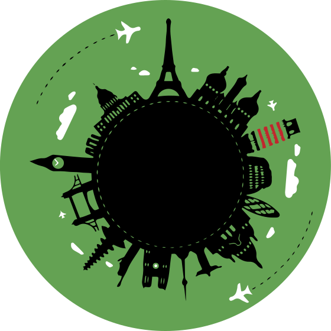

Misión
Brindar a nuestros visitantes experiencias turísticas memorables y sostenibles que los conecten con la riqueza natural de Santiago Yosondúa, impulsando al mismo tiempo el desarrollo económico de nuestra comunidad y protegiendo nuestro medio ambiente.